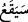

müteaddî olmuştur. Yoksa burada “ba” harf-i cerrinin getirilmesi, tazmin yoluyla geçişli
yapma kabilinden değildir. Nitekim Keşşâf müellifi Zemahşerî bu şekilde iddiâ
etmektedir. Fakat böyle tazmin yoluyla geçişli olması söz konusu değildir. Çünkü
Zemahşerî’nin Nahl sûresinin tefsirini yaparken açıkça ifâde ettiği üzere, tazmin iki
mânânın toplamını bir fiile vermek demektir. Hâlbuki bizim ele aldığımız âyet-i
kerîmede “seele” fiili ile “deâ” fiilinin mânâlarının bir araya toplanmasında herhangi
bir fayda yoktur. Zira bu iki fiilden biri diğerini gereksiz kılmaktadır. Çünkü mânâları
aynıdır.
Âyette işâret edilen “isteyen biri”nden maksad rivâyetlere göre İbn Abbas (r.a.)’dır.
Cumhûrun tercihine göre bu kişi İbn Abbas (r.a.) değil Abduddar oğullarından Nadr b.
Hâris’tir. Nadr b. Hâris inkâr ve alay yollu, “Allah’ım eğer bu âyetler senin katından
gelen âyetler ise bizim başımıza gökten taş yağdır; ya da bize elem verici bir azap
indir” demişti.
Âyet-i kerîmede azâb için, “vaki olmuş, inmiş” denilip “
/seyekau: inecek,
gelecek” denilmemiştir. Bunun sebebi, azâbın geleceğinin kesinliğini göstermektir. Bu
azâbın dünyadaki hâli Bedir gününün azâbıdır. Zira Nadr b. Hâris Bedir günü
katledilmiş idi. Âhiretteki şekli ise cehennem azâbıdır.
Rivâyet olunur ki Muâviye, Sebe halkından bir kişiye:
“–Senin kavmin ne kadar câhilmiş, başlarına bir kadını getirmişler” deyince o kişi
Muâviye’ye;
“–Senin kavmin benim kavmimden çok daha câhilmiş. Çünkü onlar Peygamber (s.a.)
Efendimiz’e kendilerini hakka çağırdığı zaman: «Eğer bu âyetler Sen’in katından gelen
hak âyetler ise o zaman başımıza gökten taş yağdır» demişlerdi de: «Eğer bu âyetler
Sen’in katından inen hak âyetler ise o zaman bizi o hakka hidâyet eyle!» dememişlerdi”
diye cevap vermiştir.
Bâzı âlimlerin ifâdesine göre âyet-i kerîmede yer alan “sâil” yâni isteyen kişi,
Peygamber (s.a.) Efendimiz’dir. O (s.a.) kâfirlerin azaplarının tezden başlarına
gelmesini istemiş ve Cenâb-ı Hakk’ın kâfirleri ağır bir cezâ ile cezâlandırmasını, Hz.
Yusuf (a.s.) zamanındaki kıtlık seneleri gibi kıtlık çekmelerini dilemişti.[84]
Şöyle de denilmiştir: Allah’ın “isteyen istedi” şeklindeki ifâdesi, onların bu bilinen
isteklerini hikâye etmektedir. Bu tıpkı; “Sana kıyâmeti sorarlar.” (Nâziat, 79/42),
“«Doğru iseniz bu vaad (azap) ne zamandır?» diyorlar.” (Yunus, 10/48) âyet-i
kerîmeleri ve buna benzer diğer âyetlerdeki sorular gibidir. Çünkü kâfirlerin üzerlerine
ineceği bilinen azap bu azaptır. Yoksa Nadr b. Hâris’in istemiş olduğu şey değildir.
Buna göre âyetteki “seele” fiili “istedi, talep etti” anlamına değil de gerçek kendi
anlamına; yâni “araştırma, sorma ve açıklama isteme” anlamınadır. Çünkü kâfirler,
Peygamber (s.a.) Efendimiz ve sahâbîlerine, bu azâbın ineceğini inkâr etmiş olmak ve
alay etmek için “bu azap kime inecek ve ne zaman inecek” şeklinde sorular
soruyorlardı.